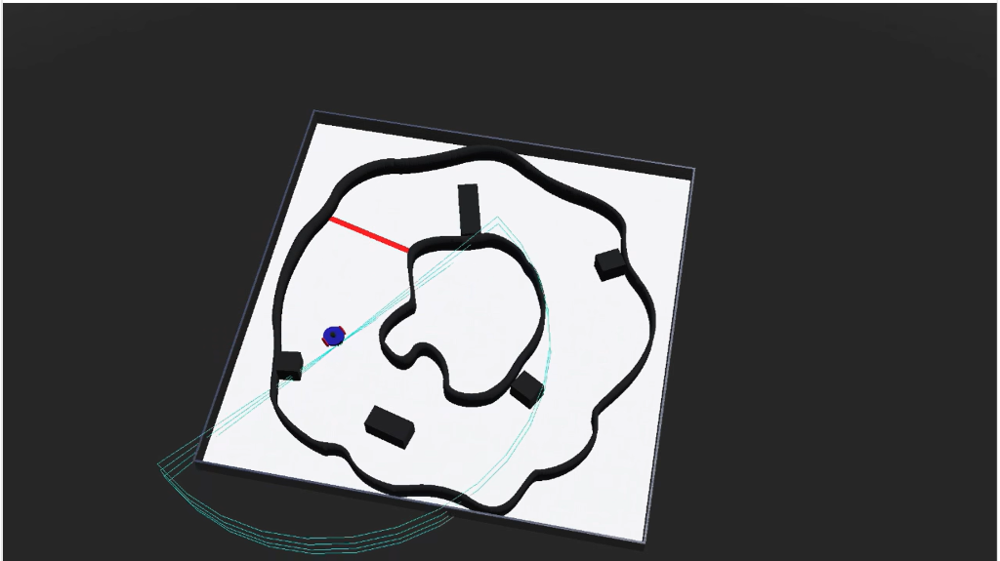

Project Overview
PeraBots 25 is a fully autonomous mobile robot platform designed for dynamic obstacle avoidance and goal-directed navigation. The system uses a LIDAR sensor as its primary perception device, processing point-cloud data in real-time to build a local environment map and plan collision-free paths.
The robot competed at the national PeraBots competition, achieving finalist standing with a 95% collision-free traversal rate across increasingly complex arena configurations.
Technical Details
- LIDAR-based dynamic obstacle avoidance using 360° point-cloud scanning at 10 Hz refresh rate
- PID-tuned differential drive control for precise heading and velocity regulation, achieving smooth arc turns and point-to-point navigation
- Path-optimization algorithms developed in Webots (C++ simulation environment) before deployment to physical hardware
- Real-time sensor feedback interpretation with noise filtering and dynamic threshold adaptation for varying arena conditions
- Custom motor driver interface with encoder feedback for closed-loop speed control on each wheel independently
- Arena mapping algorithm for progressive exploration and goal-seeking behavior
Challenges & Solutions
Transitioning from simulation (Webots) to physical hardware revealed significant differences in motor response and sensor noise profiles. The PID gains that worked perfectly in simulation caused oscillatory behavior on the physical robot. This was resolved through systematic field-tuning using the Ziegler-Nichols method with additional D-term damping.
The LIDAR sensor occasionally produced ghost readings from highly reflective surfaces in the arena. A statistical outlier rejection filter was implemented to discard readings that deviated more than 2σ from the rolling median.